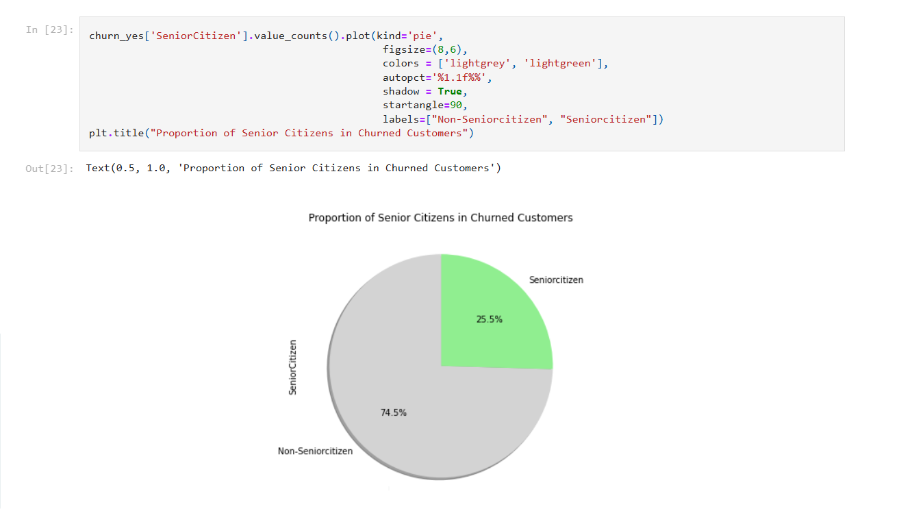

PORTFOLIO
wykonanych projektów i raportów
Jestem analitykiem danych / inżynierem danych z kilkuletnim doświadczeniem w pracy z danymi na różnych etapach ich przetwarzania – od pozyskiwania wymagań biznesowych, przez modelowanie i przekształcanie danych, aż po ich wizualizację w narzędziach BI. Skupiam się na dostarczaniu użytecznych i czytelnych analiz, które wspierają podejmowanie decyzji. W swoim portfolio prezentuję projekty, które pokazują moje umiejętności w zakresie przetwarzania danych, budowy efektywnych modeli oraz tworzenia intuicyjnych dashboardów.
Raporty dynamiczne
Raport Power BI - dane sprzedażowe
Raport Sales Analysis prezentujący dane sprzedażowe i preferencje klientów.
Raport Power BI
Raport Coffe Shop prezentujący dane sprzedażowe.

Raport Tableau
Raport typu Overview prezentujący ogólne wskaźniki danych sprzedażowych.

Analizy Python
Analiza Python
Analiza danych dotycząca odpływu klientów wykonana w Jupyter Notebook.
Analizy SQL
Analiza SQL
Zbiór zapytań SQL utworzonych w celu analizy danych COVID-19.